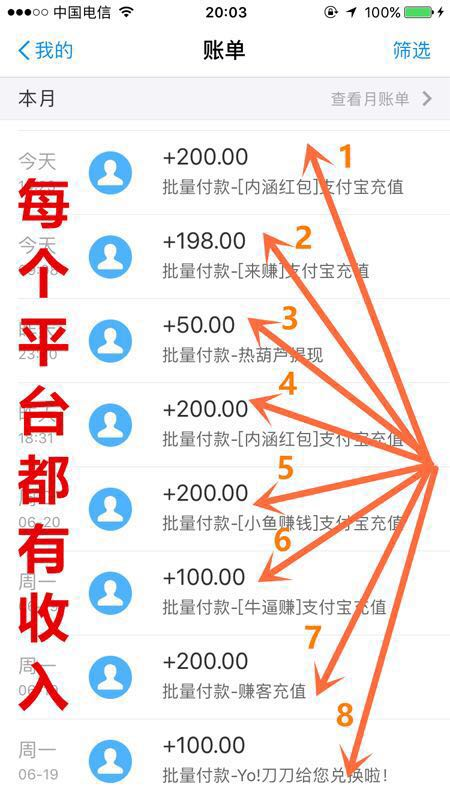

因视频是好久之前录的，现公众号已多次优化升级，试玩列表也与视频中不完全一样，请大家谅解
 ）
）每个兼职平台都有对应的任务助手，任务过程中必须运行任务助手，确保即时获得奖励
不必担心平台助手太多占用内存，任务助手容量可以忽略不计
单个任务做完可以删除任务，但不能删除任务助手，否则无法领取任务，如遇任务助手闪退，卸载重装即可
（Ps：任务助手一定要在本公众号里按正常流程下载，任何非官方渠道下载，立即封号处理，拒绝提现，请大家务必遵守平台规则）
由于时间段关系，进入兼职平台后没有任务，是没有到任务刷新的时间，可选择下一个平台试玩，大量任务刷新集中在下午15：00-19:00点，上午少量刷新
（尤其在15:00和16:00两个时间段任务最多，16:00为任务高峰期，其他时间不定时刷新，建议多打开助手刷新查看）
官方任务包括：快速任务，极速任务，限时任务
联盟任务：一定几率不得奖励，要求注册必须注册，试玩必须前台运行，返钱很慢或不返，不建议做。
提现时务必核对好自己的账户信息，确保正确无误，个别平台不需要提现，每做1个任务就秒到账微信
下面是提现截图

扫码关注我们更多平台等你来赚
小贴士
为了大家方便找到公众号下载平台以及更新任务助手，建议置顶公众号，试玩更方便！（公众号主页点击右上角选择“置顶”即可，详情如下图。）